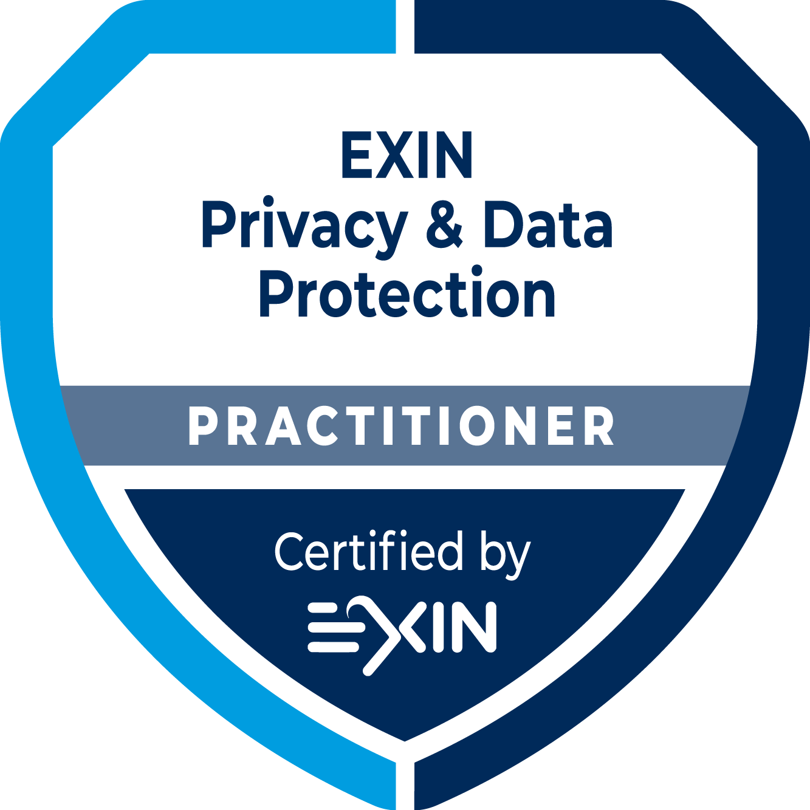
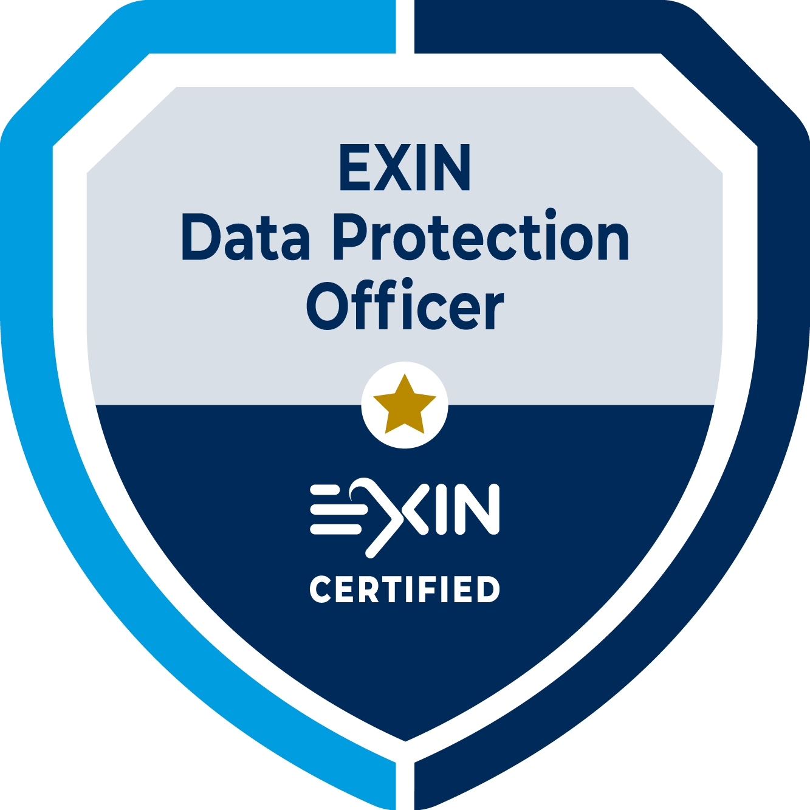
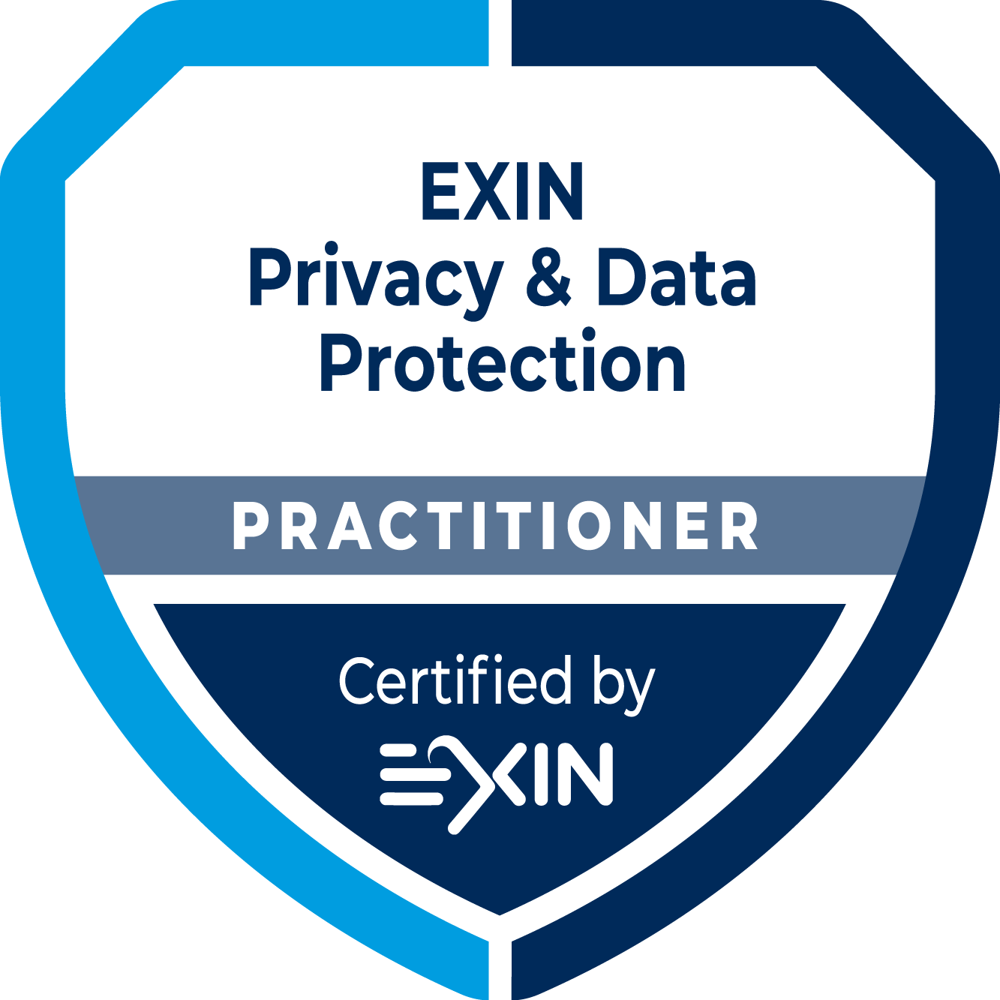
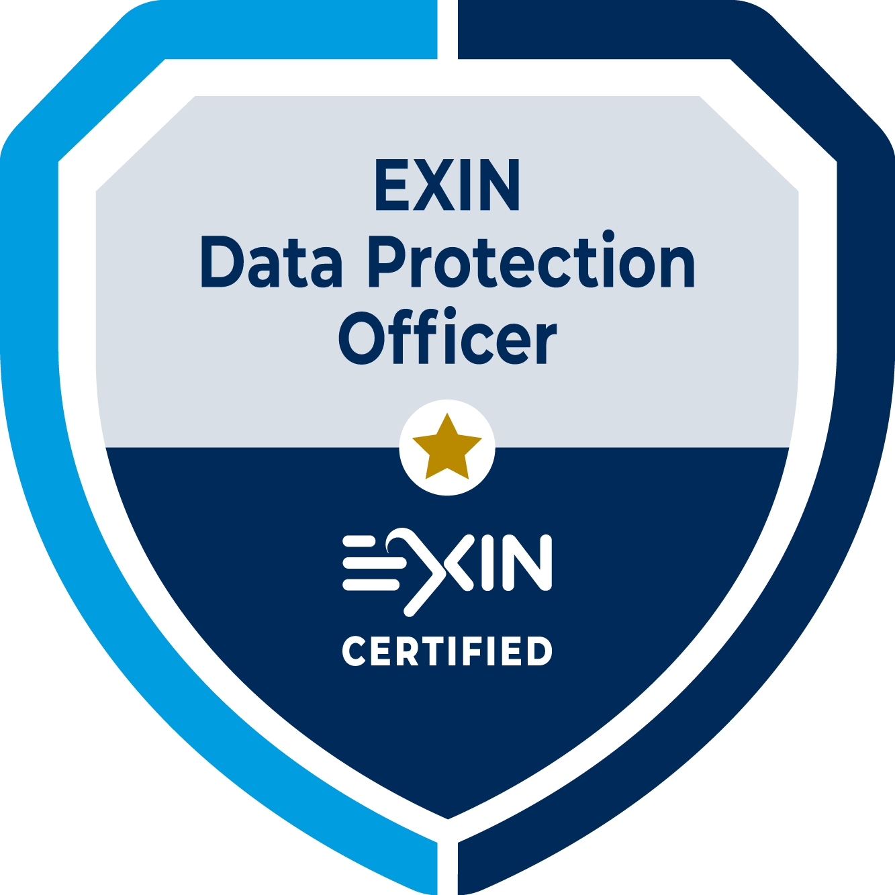

DPO | Ethical Hacker | Analista de Segurança | Desenvolvedor Web e Mobile
Encarregado de Dados certificado como Data Protection Officer pela Exin, atuo na área de privacidade e proteção de dados, conduzindo, pela Forte Security, processos de adequação e compliance à Lei Geral de Proteção de Dados.
Atuo também na condução de testes de invasão (Penetration Testing) em ambientes web e de rede, sendo certificado pela eLearnSecurity como Junior Penetration Tester.
Atualmente, além das atividades listadas acima, sou aluno do curso de Ciência da Computação na Universidade Federal de Santa Maria (UFSM), e do curso de Sistemas de Informação na Antonio Meneghetti Faculdade (AMF), graduações que curso de forma concomitante.
Possuo experiência com desenvolvimento nas linguagens PHP, Javascript, React e Node.JS para o desenvolvimento web, assim como React Native para desenvolvimento mobile, Python/Shell Script para construção de scripts e C++ focado em Arduino, sendo, ainda, integrante do grupo de desenvolvimento de sistemas internos do CTISM-UFSM, responsável pela construção de sistemas de uso interno e pelo aplicativo oficial da instituição.
Sou focado e resiliente quanto aos meus objetivos, sempre busco me atualizar, aprender coisas novas e ganhar experiência nas áreas que amo. Pois como já dizia o próprio Platão, para mover o mundo, o primeiro passo é mover a si mesmo.
Sobre:
Projetos:
Realizei meu Ensino Médio junto a um Curso Técnico em Informática para Internet, no Colégio Técnico Industrial de Santa Maria (CTISM). Durante esse período, realizei inúmeros projetos em áreas distintas da tecnologia, sendo bolsista em meu segundo e terceiro ano em alguns desses projetos.
Dessa forma, tive experiências na construção de agentes autônomos reativos com arduino, realização de treinamentos de capacitação e conscientização em segurança da informação de equipes das forças armadas, desenvolvimento de aplicações web e mobile para uso interno da instituição, entre outras habilidades, linguagens e soft skills que identifiquei no caminho.
Trabalho:
Iniciei meu trabalho na Forte Security em 2020, como Analista de Segurança Júnior, sendo responsável pela implantação, gerenciamento e configuração de Firewalls e dispositivos de segurança. Além disso, também era encarregado da implantação e monitoramento de sistemas e softwares de segurança, como IDSs.
Atualmente, sou o Encarregado de Dados (DPO) da Forte Security, responsável pela orientação e condução dos processos internos de adequação e compliance à LGPD. Ademais, também realizo a condução, junto ao CEO da empresa, das adequações de nossos clientes, realizando treinamentos e elaborando novas soluções de privacidade e proteção de dados.
Skills:
Durante minha trajetória, considerei de extrema importância, além de me desenvolver e ganhar experiência em determinadas áreas que tenho maior afinidade, encontrar desafios e gerar resultados sólidos em cima de meus conhecimentos. Sendo assim, busco realizar certificações que me estimulem e desafiem cada vez mais, de forma a não ficar parado ou estagnado nunca!
Abaixo, observam-se algumas de minhas certificações:

 


